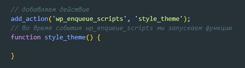
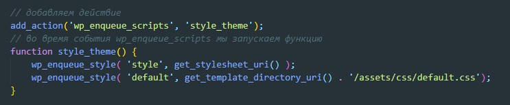
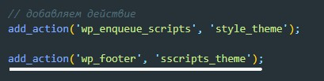
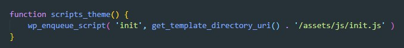

Хуки в Wordpress - Когда вордпресс загружает сайт он выполняет некоторые действия (загрузка шапки, подключение скриптов, загрузка страницы и т.д.). С помощью хука мы можем подцепиться к определенному действию и выполнить свою функцию в момент совершения этого дейтсвия (что-то типа методов жиненого цикла в React).
Хуки бывают двух видов:
В файле functions.php создаем действие
wp_enqueue_scripts - это хук событие во время которого будут подгружаться стили и скрипты. НО! wp_enqueue_scripts срабатывает только во ремя срабатывания хука wp_head. Нам надо вызвать этот хук в header.php. Выгладеть это будет вот так:

Т.е. прописываем этот хук перед закрывающимся тегом head
Теперь нам нужно непосредственно подключить стили. За это отвечает функция wp_enqueue_style. Эта функция может принимать 5 аргументов:
Далее нам нужно подключить главный файл со стилями style.css который находится в корне темы, для этого мы можем воспользоваться функцией get_stylesheet_uri() которая фозвращает полный путь до этого файлв
Скрипты в WP мы подключаем в подвале сайта, для этого нам понадобится Хук - wp_footer

Далее мы создаем новый action и подключаемся к хуку события wp_footer
Затем создаем функцю и в ней мы используем функцию wp_enqueue_script которая работает по аналогии с wp_enqueue_style, то подключает уже скрипты
